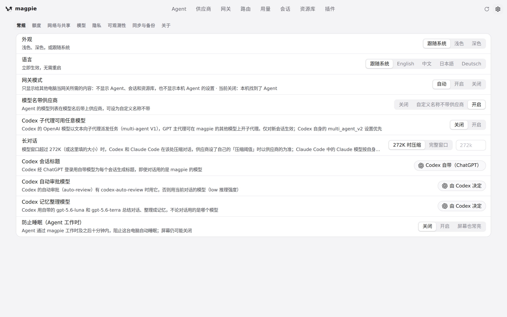
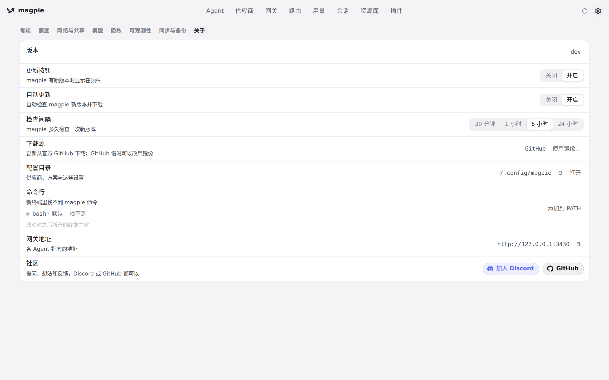
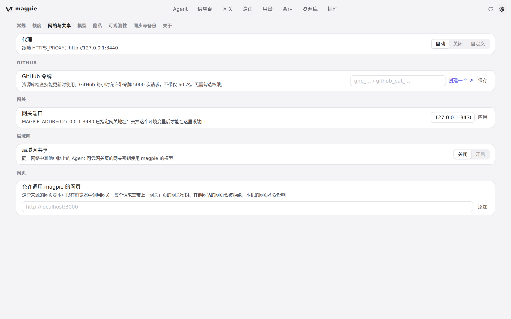

#1148 界面预览
commit d182c1a · 回到 PR · 改的是设置页保存代理时的行为：当更新检查此前失败、用户又改了代理，POST /api/settings 现在先调用 begin() 把状态标成「检查中」，再异步重跑检查，于是保存在后立刻读取 /api/update 的页面画出来的是正在检查，而不是那条不会再自动轮询的旧错误。
红线是鼠标走过的轨迹，红色圆环是一次点击；底部文字是这一步在做什么。空格暂停，← → 逐段查看。

设置里的更新检查与代理 · 打开设置后的默认标签页

设置里的更新检查与代理 · 「关于」标签页里的更新检查区域

设置里的更新检查与代理 · 「网络与共享」标签页里的代理设置